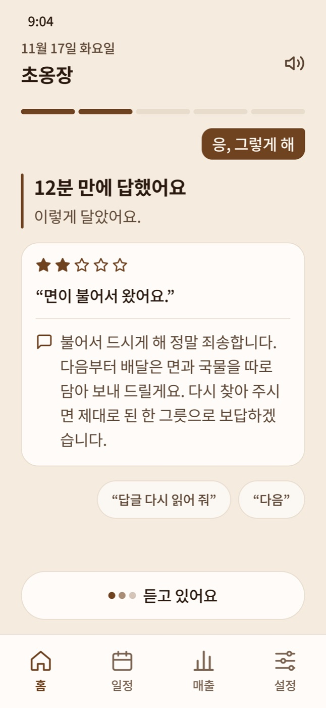
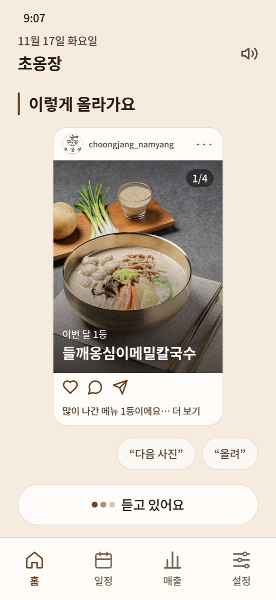
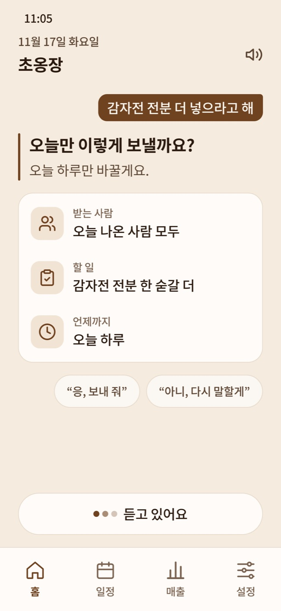

시끄러운 주방에서도 내 말을 알아듣나?
88.7%
받아쓰기 오류가 섞여도 뜻을 맞힌 비율
근거 보기
- 대부분의 응답 시간 1.14초
- 평가 대상: 음성 인식
“오늘 인스타에 뭘 올릴지
고민할 시간도 없어요.”
실무는 AI 직원이, 관리는 인사과가, 검사는 감사팀이, 결정은 사장님이 합니다.
AI 직원의 성과를 평가하고, 믿을 만해지면 승진을 제안해요
결과물을 검사하고, 불합격이면 되돌려 다시 만들게 해요
도나가 CLOVA Voice로 먼저 브리핑하고,
CLOVA Speech가 사장님 말을 알아듣습니다.



인사과가 AI 직원마다 직급을 매기고, 사장님이 한마디로 승진시킵니다.
| 위험도 | 업무 | 상한 |
|---|---|---|
| 낮음 | 칭찬 리뷰, 휴무 공지 | 과장 |
| 중간 | 홍보 게시물, 알바 지시 | 대리 |
| 높음 | 부정 리뷰, 가격 안내 | 사원 |
“그래, 승진시켜 줘.” 사장님 한마디면 됩니다.
사장님이 도나를 믿을 수 있는지, 사장님이 물을 질문으로 평가했습니다.
88.7%
받아쓰기 오류가 섞여도 뜻을 맞힌 비율
6.9% 검사기 없을 때 20.8%
손님에게 나간 답글 중 위반 답글, 약 3분의 1로
54.5%
알바생 할 일 제안 중 쓸모 있었던 제안
28일
잘하는 담당이 대리가 되기까지, 중앙값
| 항목 | 기존 서비스 | DONNA |
|---|---|---|
| 예 | 배달의민족, 네이버 플레이스의 AI 리뷰 답변 | 사장님, 인사과, 감사팀, 세 부서로 이뤄진 AI 조직 |
| 단위 | 개별 기능 | 가게 하나 |
| 하는 일 | 리뷰 답변을 써 줌 |
|